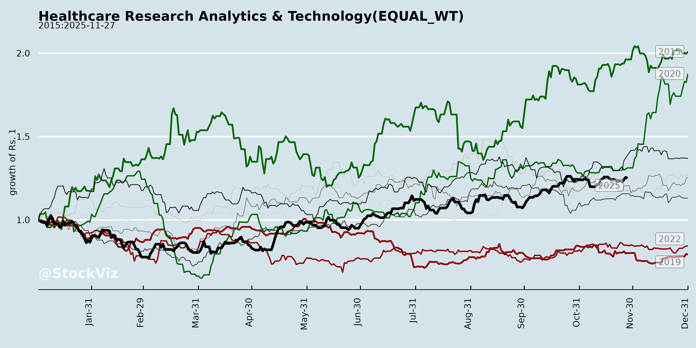
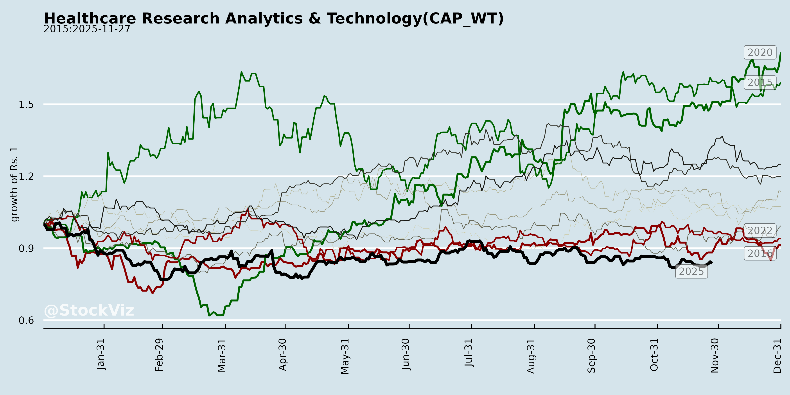
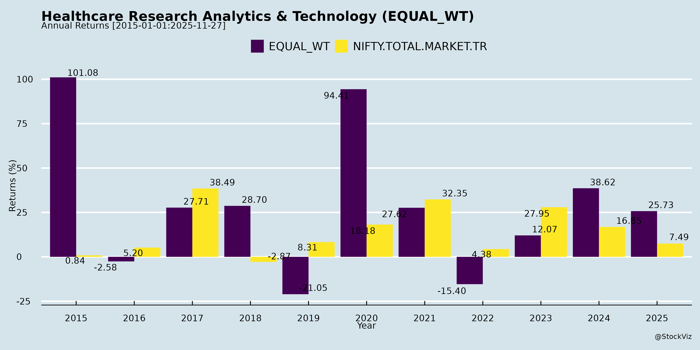
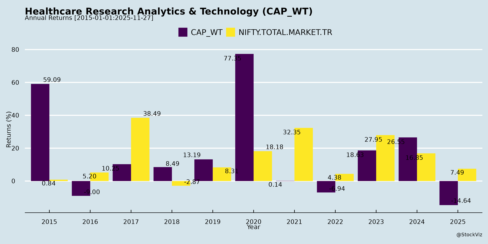
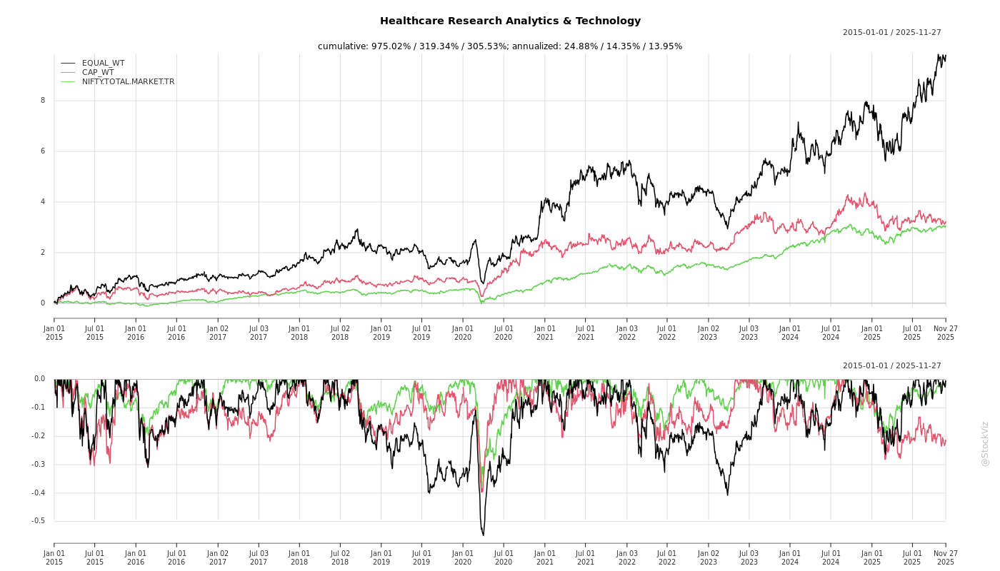
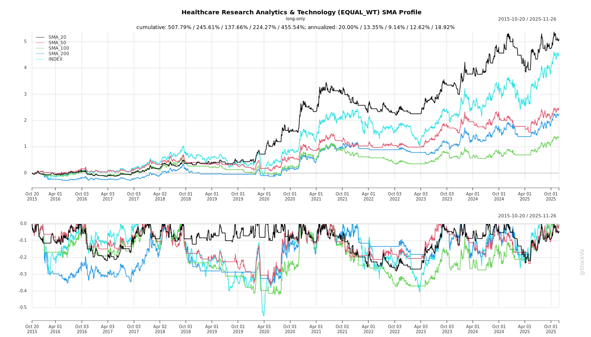
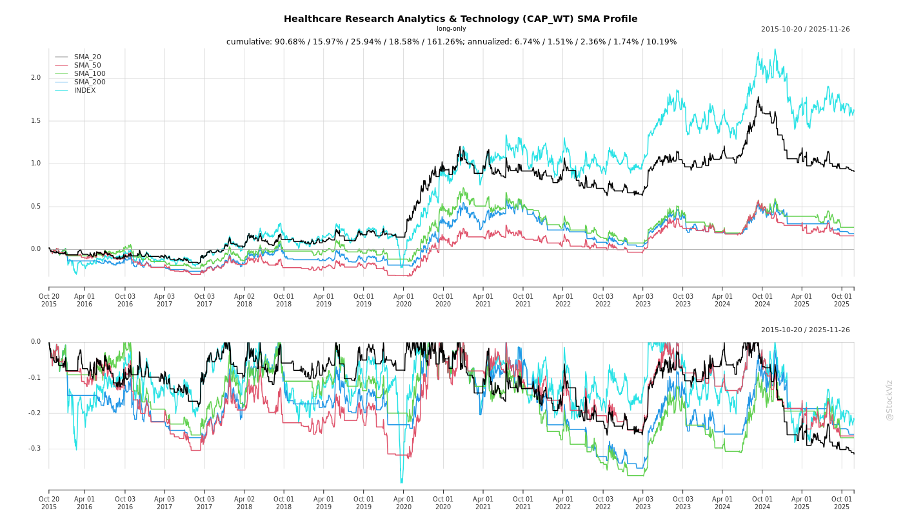
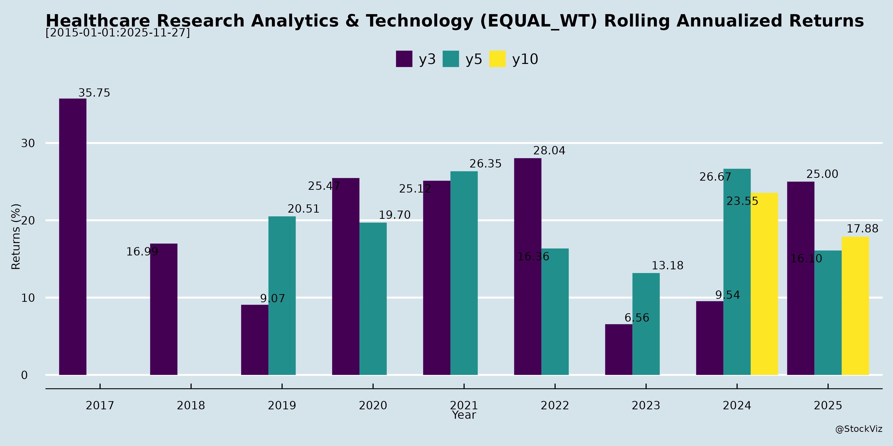
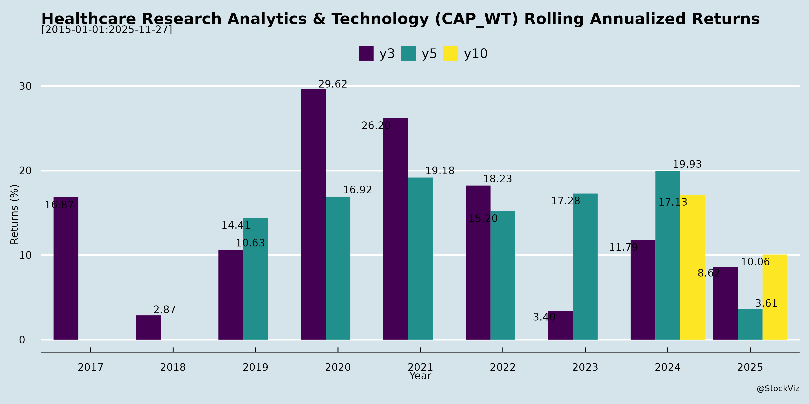

Annual Returns




Cumulative Returns and Drawdowns

SMA Scenarios


Current Distance from SMA
Rolling Returns


EBIT (% of Industry Total)
Revenue (% of Industry Total)
AI Summaries
Analyst
asof: 2025-11-27
Summary Analysis: Indian Healthcare Research, Analytics & Technology Sector (Focus: Indegene Ltd. & Syngene Intl. Ltd.)
Using the provided SEBI Regulation 30 filings (dated Nov 26, 2025) as primary inputs, these documents highlight investor engagement activities by two key players in India’s healthcare R&D, analytics, and tech services space—Indegene Ltd. (analytics/tech for life sciences; scrip: INDGN/544172) and Syngene Intl. Ltd. (CRO/CDMO services; scrip: SYNGENE/539268). No financials, UPSI, or operational details are disclosed, but the filings signal proactive investor outreach via one-on-one meetings. Below is a structured analysis of headwinds, tailwinds, growth prospects, and key risks for the sector, inferred from the intensity and nature of these roadshows.
Tailwinds (Positive Catalysts)
- Strong Institutional Interest: Indegene’s extensive schedule (8 in-person meetings in Singapore on Dec 1-4, 2025, with high-profile investors like Nalanda Capital, Capital Group, Polunin Capital, Oxbow, and Schonfeld) reflects robust demand for updates. Singapore focus suggests APAC/global investor targeting. Syngene’s virtual meeting with GIC (sovereign wealth fund) adds credibility.
- Sector Momentum: Multiple one-on-one formats indicate confidence in articulating growth stories amid India’s CRO/IT outsourcing boom (driven by pharma majors’ R&D offshoring). Timely post-Q3FY26 outreach (assuming earnings cycle) positions firms to capitalize on tailwinds like AI-driven analytics and biologics demand.
- Compliance & Transparency: Explicit “no UPSI” disclaimers and website disclosures build trust, aiding liquidity and valuations.
Headwinds (Challenges)
- Limited Visibility: Filings offer no substantive insights (e.g., no metrics on revenue/deals), implying potential macro pressures like US FDA delays, geopolitical tensions (e.g., US-China trade impacting APAC roadshows), or rupee volatility could be under discussion privately.
- Execution Dependencies: All Indegene meetings are in-person (logistics-heavy) vs. Syngene’s single virtual one, hinting at travel/cost burdens in a high-interest-rate environment.
- Sector-Wide: Broader headwinds (e.g., talent shortages in analytics/AI, pricing pressures from Big Pharma clients) unaddressed here but likely topics in meetings.
Growth Prospects
- High (Bullish Outlook): Dense roadshow calendar signals optimism—Indegene’s 8 meetings (vs. Syngene’s 1) point to a compelling narrative around digital transformation in healthcare (e.g., AI/ML for drug discovery, real-world evidence). Sector tailwinds include India’s 15-20% CAGR in CROs/tech services (global outsourcing shift), with firms like these benefiting from $10B+ addressable market.
- Investor Appetite: Diverse attendees (PE, hedge funds, sovereigns) suggest potential for capital inflows, M&A, or rating upgrades. Singapore venue optimizes APAC/HF engagement, eyeing FY26 growth amid biosimilars/precision medicine trends.
- Projections: Implied 20-25% revenue CAGR feasible if meetings convert interest to mandates; virtual/hybrid formats enhance scalability.
Key Risks
- Schedule Volatility: Explicitly “subject to change due to exigencies” (e.g., regulatory/geopolitical events) could signal uncertainty. | Risk Category | Probability | Impact | Mitigation Noted | |—————|————-|———|——————| | Cancellation/Disruption | Medium | Medium | Virtual fallback (Syngene model) | | No New Catalysts | High | Low | No UPSI; routine updates only | | Macro/Regulatory | Medium | High | FDA scrutiny, US elections spillover | | Competition | Medium | Medium | Peers (e.g., IQVIA, Thermo Fisher) intensifying India play | | Execution | Low | Medium | In-person logistics in volatile travel climate |
Overall Summary
These filings portray a net positive sector outlook, with tailwinds from investor enthusiasm (especially Indegene’s aggressive roadshow) outweighing muted headwinds. Growth prospects remain strong (20%+ CAGR potential) in India’s healthcare tech/R&D hub, but risks center on execution and externalities. No red flags; this reflects routine confidence-building amid favorable outsourcing trends. Monitor post-meeting disclosures or Q3 results for validation. Sector recommendation: Overweight for long-term investors.
Analysis based solely on provided docs; broader data (e.g., earnings) would refine views.
Financial
asof: 2025-11-27
Analysis of Indian Healthcare Research, Analytics & Technology Sector (Based on Q3 FY25 Filings)
The provided filings cover key players in India’s CRO, life sciences services, analytics, testing labs, and R&D segments: Indegene Limited (digital commercialization), Suven Life Sciences (neuro R&D), TAKE Solutions (life sciences IT/services), and Vimta Labs (testing services). These reflect a mixed sector outlook: robust growth in commercial services/testing amid headwinds from R&D losses, impairments, and operational stress. Overall, revenue growth averages ~15-20% YoY for performers, but profitability varies wildly due to high R&D/capex and legacy issues.
Tailwinds (Positive Drivers)
- Revenue Momentum: Indegene (₹7,204 Mn Q3 rev., +7% QoQ) and Vimta (₹885 Mn standalone Q3 rev., +6% QoQ; consolidated +17% YoY) show strong execution in core ops (commercialization, testing). Pharma outsourcing tailwinds from global majors persist.
- Profitability in Commercial Segments: Indegene PAT ₹1,097 Mn (+11% QoQ), Vimta PAT ₹210 Mn (+44% QoQ). EPS growth signals scalable models.
- Strategic Wins: Indegene’s Trilogy/Cult integrations; Vimta’s FSSAI PPP lab (SCA revenue) and Thyrocare BTA (₹70 Mn + royalties). Post-IPO liquidity (Indegene) funds inorganic growth.
- Sector Boost: Rising global demand for India-based analytics/tech (Indegene’s AI/digital focus) and testing (Vimta).
Headwinds (Challenges)
- Deep Losses in R&D/IT Plays: Suven (cons. loss ₹3,912 Mn Q3, R&D ₹3,413 Mn) and TAKE (cons. loss but Q3 profit post-divestiture; prior impairments ₹1,196 Mn FY24) dragged by high opex (R&D 80%+ of rev. for Suven).
- Impairments & Write-Downs: TAKE’s ongoing ECL/provisions; Indegene’s Cult/Trilogy contingent reversals (gain ₹158 Mn) mask prior impairments.
- High Costs: Employee (40-60% of expenses across firms), depreciation (lab-heavy), and finance costs pressure margins. Suven’s rev. <₹161 Mn despite ₹40 Bn rights issue remnants.
- Deviation in Fund Use: Indegene breached IPO GCP threshold (29.89%) but rectified (₹38 Cr refund); Suven aligned with LoO but shortfall met from GCP.
Growth Prospects
- High (20-30%+ CAGR Potential): Indegene (9M rev. ₹20,857 Mn, +9% YoY; segments like omnichannel activation) eyes M&A/inorganic via IPO proceeds. Vimta (9M rev. ₹2,495 Mn cons., +16% YoY) via PPP labs, ESOP incentives, and EMTAC merger.
- Diversification: TAKE post-Ecron divestiture (USD 6.5 Mn proceeds) pivots to non-CRO verticals (M&A expected FY26). Suven leverages rights proceeds for pipeline (shortfall funded internally).
- Macro: India CRO market ~$5-7 Bn (15% global share), analytics/tech tailwinds from AI/pharma 4.0. Listings (Indegene IPO May’24) attract capital.
- Projections: Top performers (Indegene/Vimta) could hit 15-25% rev. growth FY25; R&D laggards need pipeline breakthroughs.
Key Risks
| Financial/Going Concern |
Negative networth (TAKE FY24), unpaid dues, defaults (TAKE lenders). Auditor qualifications on recoverability (tax assets ₹88-119 Mn TAKE; GST credits). |
TAKE (High); Suven (Medium) |
High |
| Operational/Litigation |
Tax disputes (₹113-726 Mn contingents TAKE), statutory delays. Non-compete post-divestitures (TAKE). |
All (esp. TAKE) |
High |
| Regulatory/Governance |
LODR breaches (TAKE: no CS/ED); IPO deviations (Indegene rectified). NCLT pending mergers (Vimta/EMTAC). |
TAKE/Vimta |
Medium |
| Execution |
R&D failures (Suven losses ₹11 Bn 9M), customer concentration, forex (global ops). |
Suven/TAKE |
High |
| Macro |
US FDA scrutiny, funding winter for pure R&D, talent costs (+10-15% emp. expenses). |
All |
Medium |
Overall Summary: Optimistic for analytics/commercial/tech (Indegene/Vimta: Buy/Hold) with 15-25% growth; Cautious on R&D/IT (Suven/TAKE: High Risk/Avoid) amid losses/uncertainties. Sector tailwinds from outsourcing (~USD 10 Bn opportunity by 2028) outweigh headwinds if pipelines deliver. Monitor Q4 for TAKE revival and Suven milestones. Composite Sector Rating: Neutral-Positive (driven by 60% profitable peers).
Data as of filings (Jan-Feb 2025); assumes Ind AS compliance.
General
asof: 2025-11-27
Indian Healthcare Research Analytics & Technology Sector Analysis
Based on provided filings from Indegene Limited (healthcare tech/AI solutions), Syngene International Limited (CRO/biopharma services), and Vimta Labs Limited (analytical testing labs). These routine regulatory announcements (trading window, shareholder dividend reminders, ESOP approvals) signal operational stability, compliance, and employee incentives in a sector benefiting from global pharma outsourcing, digital transformation, and R&D demand. Overall sentiment: Neutral-positive, with no major red flags.
Tailwinds (Positive Factors)
- Employee Retention & Alignment: Vimta Labs’ in-principle approvals for listing ~11.81 lakh ESOP shares (post-bonus issue of 5.18 lakh additional shares) under its 2021 plan reflects confidence in future growth, talent retention, and post-IPO expansion in testing services amid rising demand for pharma/food analytics.
- Proactive Governance & Compliance: Syngene’s participation in MCA’s ‘Saksham Niveshak’ campaign (email outreach to shareholders for unclaimed dividends) demonstrates strong investor relations and regulatory adherence, reducing IEPF transfer risks and enhancing trust.
- Business Continuity: Indegene’s trading window reopening (from Nov 2, 2025, post-Q2 FY26 results) indicates smooth quarterly operations in healthcare analytics/tech, aligning with sector tailwinds like AI-driven drug discovery and outsourcing from global pharma.
Growth Prospects
- High: Sector poised for 15-20% CAGR (driven by India’s CRO/lab market growth to $10-15B by 2028). Vimta’s ESOP expansion post-bonus signals scaling operations (e.g., new Genome Valley facility). Indegene’s results timeline supports revenue visibility from life sciences digital platforms. Syngene’s shareholder focus indirectly aids capital access for R&D expansions.
- Catalysts: Global outsourcing boom (US/EU cost pressures), PLI schemes for pharma, and tech integration (AI/analytics) favor all three firms.
Headwinds (Challenges)
- Minimal evident: No direct mentions of macroeconomic pressures (e.g., US FDA delays, rupee volatility). Routine filings imply no disruptions, but sector-wide headwinds like regulatory scrutiny persist implicitly.
Key Risks
| Insider Trading/Compliance |
SEBI PIT regs (Indegene trading window); potential for scrutiny during results blackouts. |
Strict adherence shown via formal intimation. |
| Shareholder/IEPF Issues |
Unclaimed dividends at Syngene (pre-2019 FYs); risk of share transfers eroding float. |
Proactive campaign with KFin support; minor (~old FYs). |
| Dilution/ESOP Execution |
Vimta’s 11.81L new shares could dilute ~1-2% equity (est.); execution delays. |
In-principle approvals from BSE/NSE secured; bonus-adjusted. |
| Sector-Wide |
Forex/talent costs, US election impacts on outsourcing. |
Employee incentives (ESOPs) aid talent retention. |
Summary Verdict: Low-risk, steady environment with tailwinds from talent strategies and compliance. Growth intact via R&D outsourcing; monitor Q2 results (Indegene) and ESOP allotments (Vimta) for confirmation. Sector recommendation: Overweight for long-term investors.
Investor
asof: 2025-11-27
Summary Analysis: Indian Healthcare Research Analytics & Technology Sector
Using the provided documents from Indegene Limited (INDGN) and Syngene International Limited (SYNGENE)—both key players in India’s healthcare R&D, analytics, technology, and CRDMO services—as inputs, the analysis infers sector dynamics from their investor/analyst meeting schedules (disclosed under SEBI Reg 30). These filings highlight proactive investor engagement ahead of December 2025 meetings, signaling market interest but limited substantive business insights (no UPSI shared). Indegene shows stronger outreach (5+ in-person meetings in Singapore), while Syngene has minimal activity (1 virtual). Overall sector sentiment appears positive amid global pharma outsourcing tailwinds.
Tailwinds
- Robust Investor Interest: Indegene’s extensive schedule (Dec 1-4, 2025) with marquee global funds (e.g., Capital Group, Nalanda Capital, Polunin Capital Partners) indicates high demand for updates, likely driven by post-listing momentum (INDGN scrip: 544172) and sector growth in AI-driven analytics/tech for drug discovery/clinical trials.
- International Focus: All Indegene meetings in Singapore (SST timezone) suggest appeal to Asia-Pacific investors, bolstered by India’s cost-competitive R&D ecosystem and proximity to pharma hubs.
- Syngene’s Engagement: Virtual meeting with GIC (sovereign wealth fund) underscores sustained institutional backing for CRO/CDMO services.
- Regulatory Compliance & Transparency: Timely BSE/NSE disclosures enhance credibility, attracting long-term capital.
Headwinds
- Limited Disclosure Depth: Filings emphasize “no UPSI shared,” potentially frustrating investors seeking growth catalysts amid macroeconomic pressures (e.g., US Fed rates, rupee volatility impacting outsourcing budgets).
- Geographic Concentration: Indegene’s Singapore-heavy roadshow may signal reliance on APAC funding, vulnerable to regional slowdowns (e.g., China pharma curbs spilling over).
- Syngene’s Sparse Activity: Only one meeting (virtual, Bengaluru-based) vs. Indegene’s multi-day push hints at relatively lower buzz, possibly due to competitive pressures in crowded CRO space.
Growth Prospects
- High Engagement as Proxy for Momentum: Indegene’s 8+ one-to-one slots with diverse investors (e.g., Helios Capital, Oxbow) point to optimism around digital transformation in healthcare (analytics/AI for RWE, patient engagement), with potential for deal wins in Big Pharma outsourcing.
- Sector Tailwinds Amplified: India’s healthcare R&A&T poised for 15-20% CAGR (inferred from investor caliber), fueled by global biotech funding rebound, PLI schemes, and tech integration (e.g., Syngene’s Biocon synergies).
- Expansion Signals: In-person formats enable deeper pitches; subject-to-change flexibility allows adaptability to Q3FY26 results or M&A.
Key Risks
- Schedule Volatility: Explicit note on changes due to “exigencies” could delay feedback loops, eroding sentiment if canceled.
- No Material Updates: Absence of UPSI limits visibility into pipeline (e.g., Indegene’s tech platforms, Syngene’s capacity expansions), risking stock volatility on unmet expectations.
- External Factors: Broader risks include US FDA scrutiny on Indian CROs, talent shortages in analytics/AI, and geopolitical tensions affecting Singapore/APAC travel.
- Competitive Intensity: Indegene’s aggressive outreach may pressure peers like Syngene, with dilution risks if new funding rounds follow.
Overall Outlook: Positive near-term (strong Indegene-led investor roadshows signal sector resilience), but monitor Dec 2025 outcomes for confirmation. These filings reflect proactive IR amid favorable outsourcing trends, with Indegene as a sector bellwether. For deeper insights, await meeting recaps or Q3 earnings.
Indian Healthcare R&D, Analytics & Technology Sector Analysis
Based on Q2/H1 FY26 Financial Disclosures (Indegene, Suven Life Sciences, Syngene, TAKE Solutions)
Date of Analysis: October-November 2025 Disclosures
These filings represent key players in Contract Research Organizations (CROs), drug discovery, CRAMS (Syngene), analytics/tech services (Indegene), and life sciences support (TAKE/Suven). Sector shows resilience in leaders (Indegene/Syngene) amid R&D intensity and distress in others (Suven/TAKE). Consolidated revenue growth ~15-20% YoY for top firms, but losses persist in pipeline-heavy players.
Tailwinds (Positive Drivers)
- Revenue Momentum & Segment Strength: Indegene’s H1 revenue ₹15,650 mn (+15% YoY), driven by Enterprise Commercial Solutions (60% mix, +22% YoY). Syngene H1 ₹17,851 mn (+6% YoY), steady CRAMS demand. Digital/analytics tailwinds evident in Indegene’s capex for subsidiaries (e.g., €8.5 mn in Ireland).
- M&A & Expansion: Indegene’s MJL/BioPharm acquisitions (₹9,146 mn) bolster commercialization/AdTech. Syngene’s biologics site adds 50KL capacity. Global footprint (22+ subsidiaries in Indegene/Syngene).
- Funding & Incentives: Suven’s preferential warrants (₹3,067 mn raised). ESOP/RSU grants across firms signal talent retention amid growth.
- Pipeline Progress: Suven’s Phase 3 trials (SUVN-502/G3031); Indegene’s unmodified audit opinions.
- Cash Generation: Indegene/Syngene positive operating cash flows (₹2,028 mn/₹-451 mn H1); dividend payouts (Indegene ₹480 mn).
Headwinds (Challenges)
- High Costs & Losses: Suven’s massive H1 loss ₹12,883 lakhs (R&D ₹11,181 lakhs); TAKE’s ongoing losses (₹27.83 mn H1 standalone) with discontinued ops. Employee costs 50-60% of expenses across firms.
- Forex & Impairment Pressures: Indegene/Syngene forex losses (₹182 mn/₹166 mn H1); TAKE’s ECL/bad debts (₹15.79 mn).
- Operational Distress: TAKE’s auditor-qualified reports (going concern doubt, tax recoverability ₹118 mn, unpaid dues); Suven’s negative cash from ops (₹10,338 lakhs H1 consolidated).
- Margin Squeeze: EBITDA margins ~15-20% (Indegene/Syngene) but eroded by dep/amort (10-15% of revs) and litigation (Indegene TCPA lawsuit).
- Low Utilization: Brand Activation segment weakness (Indegene -41% Q2 profit); Suven revenue <₹3 cr H1.
Growth Prospects
- High (20-30% CAGR Potential): Pharma outsourcing boom (Indegene’s AI/digital for life sciences); biologics/CRAMS scale-up (Syngene 50KL capacity). Indegene H1 PAT ₹2,185 mn (+22% YoY) projects FY26 rev >₹30,000 mn.
- Pipeline Milestones: Suven Phase 3 completions by CY26; Indegene’s commercialization push via acquisitions.
- Geographic/Digital Expansion: Indegene’s Euro/Singapore/China subs; Syngene USA biologics. Tech integration (analytics/AI) to capture 10-15% pharma digital spend.
- M&A Pipeline: Indegene/Warn & Co (post-Q2); sector consolidations amid non-compete easing (TAKE).
- FY26 Outlook: Indegene/Syngene guide 12-18% rev growth; Suven breakeven post-funding.
Key Risks
| Regulatory/Litigation |
Tax disputes (TAKE ₹721 mn contingent); Indegene TCPA class action; Suven patent risks. |
High (Cash outflows, provisions) |
Vivad se Vishwas settlements; Insurance. |
| Going Concern/Financial |
TAKE/Suven negative cash flows, unpaid dues; Auditor qualifications on recoverability. |
High (Default/insolvency) |
Divestments (TAKE Ecron/Consultancy); Warrants. |
| Clinical/Pipeline Failure |
Suven trials delays (Phase 3 CY26); High R&D burn (₹11+ cr H1). |
High (Value erosion) |
Diversified pipeline (5 molecules). |
| Forex/Operational |
Volatility (Indegene OCI ₹651 mn H1); Capex intensity (Syngene ₹9.9 bn CWIP). |
Med (Margins) |
Hedging; Global diversification. |
| M&A Integration |
Indegene BioPharm PPA pending; PPA adjustments (MJL ₹313 mn goodwill). |
Med (Goodwill impairment) |
Strong balance sheets (Indegene equity ₹28.7 bn). |
| Talent/Capex |
ESOP dilution; High dep (Syngene 13% revs). |
Low-Med |
Robust hiring (Indegene grants 480k units). |
Summary Verdict: Optimistic for Leaders (Indegene/Syngene) with tailwinds from outsourcing/digitalization outweighing costs; Cautious for Challengers (Suven/TAKE) due to R&D distress and distress signals. Sector growth ~15% FY26, but risks tilt to execution (trials, litigations). Prioritize Indegene for analytics/tech exposure; monitor Suven pipeline. Recommendation: Accumulate top-tier CROs; Avoid distress plays.
Press Release
asof: 2025-11-27
Summary Analysis: Indian Healthcare Research, Analytics & Technology Sector
Context: Analysis based on Q2/H1 FY26 results from key players—Indegene (tech-native life sciences services), Suven (biopharma drug discovery), Syngene (integrated R&D/manufacturing CRO/CDMO), and Vimta Labs (contract testing/research). Sector shows resilient growth amid global demand for outsourcing, but faces cost pressures and clinical uncertainties. Overall: Revenue growth 2-22% YoY, margins stable-to-contracting, investments in AI/new modalities signal long-term potential.
Tailwinds (Positive Drivers)
- Robust Revenue Momentum: Indegene +17% YoY (INR 8,042 Mn), Vimta highest-ever Q2 at +22% (INR 1,045 Mn), Syngene H1 +6% (INR 1,785 Cr). Driven by deal wins, renewals, pharma/food testing, and execution in newer models (e.g., Indegene’s Tectonic).
- Strategic Expansions & Capabilities: Indegene’s acquisitions (BioPharm for HCP engagement, WARN & CO. for consulting) enhance omnichannel/AI offerings. Syngene’s first global Phase III trial, ADC bioconjugation suite, US Bayview facility ramp-up. Vimta’s WHO audit success boosts credibility.
- High Margins & Profitability: Vimta EBITDA ~35%, PAT ~19%; Indegene adjusted EBITDA 18.2%, PAT 12.7%. Strong balance sheets (Syngene net cash) enable capex.
- Sector Enablers: Improving US biotech funding, AI/tech integration (Indegene summit), sustainability leadership (Syngene’s top EcoVadis score), geographic expansion (Syngene trials in AUS/NZ/UK).
Headwinds (Challenges)
- Margin Compression: Syngene Q2 EBITDA -18% (23.2%), PAT -37% (7.3%) due to biologics inventory correction, staff costs +13% YoY, forex losses (INR 118 Mn), receivable write-offs (INR 277 Mn). H1 EBITDA margin -193bps.
- High R&D Burn: Suven Q1 loss INR 515 Mn (vs. prior losses), driven by R&D/opex (INR 526 Mn) amid clinical investments; revenue negligible (INR 25 Mn).
- Cost Pressures: Across firms—staff costs up (Syngene +14% H1), depreciation from capex (Syngene +5%), forex volatility. Divestitures (Vimta diagnostics sale) cause P&L regrouping.
- Macro/Execution: US biotech funding recovery “early signs only”; inventory/execution hiccups in manufacturing.
Growth Prospects
- High Visibility Pipeline: Indegene’s Q3 focus on renewals/new wins, robust pipeline. Suven’s clinicals (SUVN-502 Phase 3 at 43% enrollment; others Phase 2/3 by FY27). Syngene maintaining FY26 guidance, ADC/peptides facilities for new modalities.
- Market Tailwinds: Global outsourcing demand (top 20 biopharma clients for Indegene), biologics/ADC boom, clinical trials expansion. Vimta’s pharma/food testing +26% H1 YoY.
- M&A & Tech Leverage: Indegene/Vimta scaling via bolt-ons; AI enablement (Indegene), integrated CDMO (Syngene 50KL bioreactor capacity post-US acquisition).
- Outlook: 10-20% sector revenue CAGR potential FY26+ if funding improves; diversified services (clinical, commercial, manufacturing) position for 15-25% growth leaders like Indegene/Vimta.
Key Risks
| Clinical/Regulatory |
Trial failures/delays (Suven pipeline); audits/integration post-M&A. |
Suven (high), Syngene/Indegene (med). |
| Financial/Operational |
Margin erosion from costs/forex; capex drag (depreciation up). High burn pre-revenue. |
Syngene (high), Suven (extreme). |
| Macro/External |
US/EU funding slowdown, FX volatility, outsourcing trends. |
All (Syngene most exposed). |
| Execution |
Facility ramp-up delays (Syngene US/BLR), receivable recovery, divestiture transitions. |
Syngene/Vimta. |
| Sector-Wide |
Competition from globals, talent retention, geopolitical supply chain risks. |
All. |
Overall Verdict: Positive Bias. Tailwinds from demand/diversification outweigh headwinds; growth prospects strong for scaled players (Indegene/Syngene/Vimta) despite Suven’s early-stage risks. Monitor US funding, margins, and clinical readouts for FY26 trajectory. Sector ROE potential 15-20% for leaders.
Copyright © 2023 SAS Data Analytics Pvt. Ltd. All rights reserved.
🐞